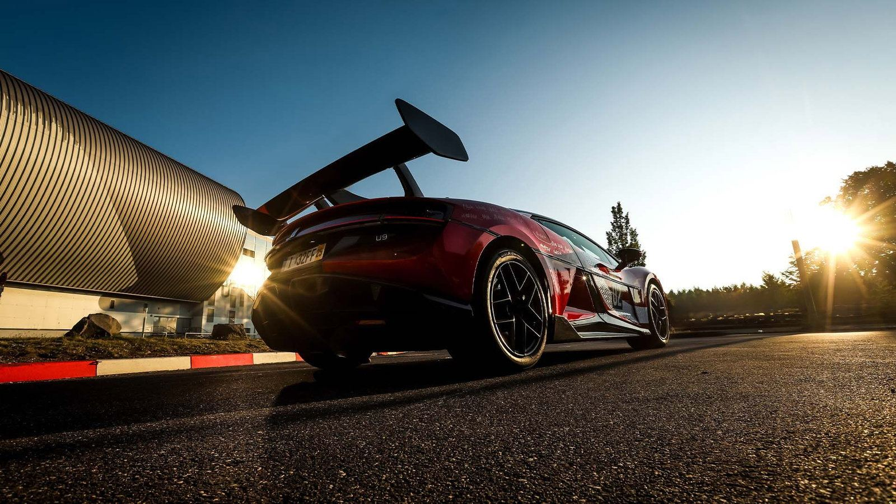
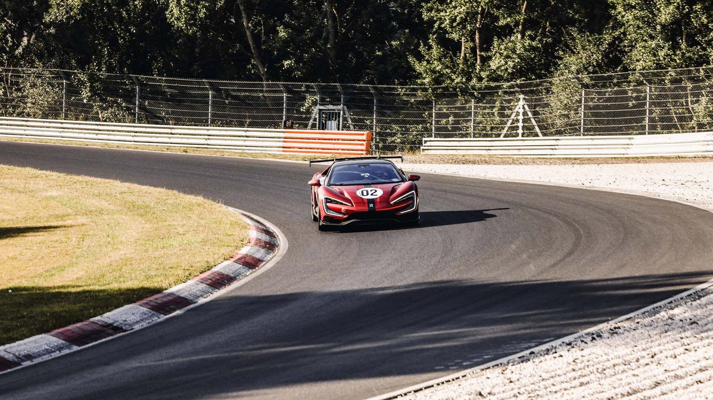
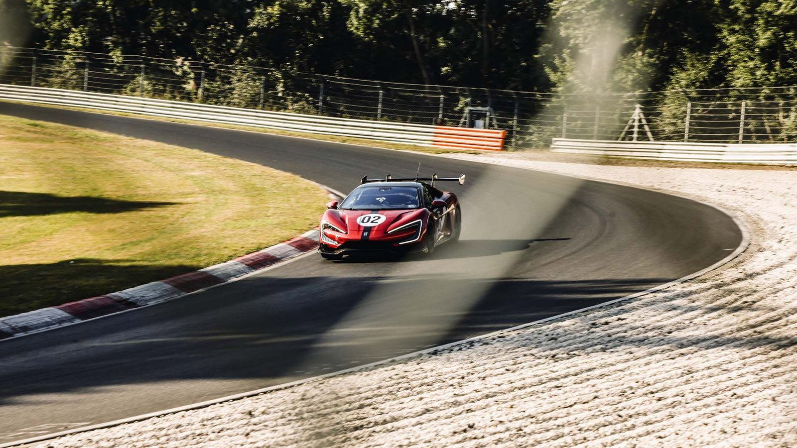
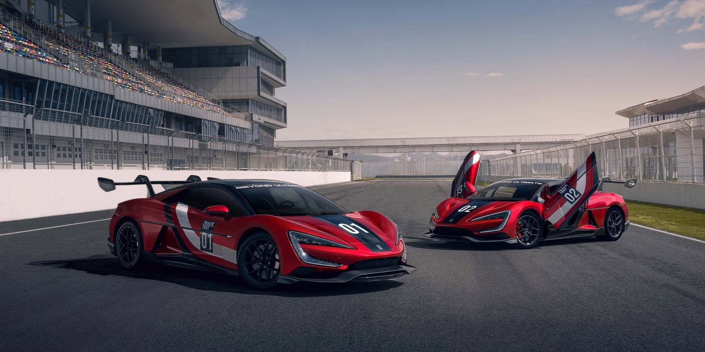
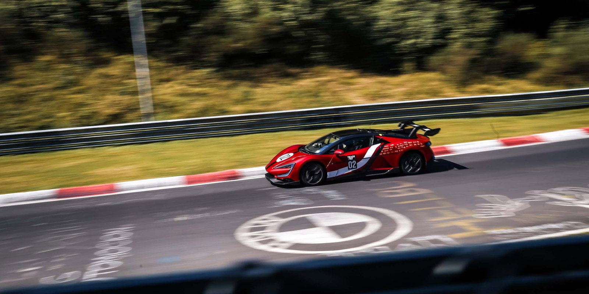

YANGWANG U9 Xtreme
Fastest Electric Vehicle on Earth. The Pursuit Beyond.
Fastest Electric Vehicle on Earth. The Pursuit Beyond.
Conventional mindsets can never create supercars that push the limits. Cars that redefine eras are born from a resolute spirit. The YANGWANG U9 Xtreme, rooted in BYD's 30 years of pioneering electrification expertise, integrates engineers' ultimate visions for new-energy vehicle performance. It shatters the 'impossible barriers', aiming to set benchmarks for top speed and Nurburgring hypercar lap times.

The YANGWANG U9 Xtreme achieved a verified top speed of 496.22 km/h at the ATP Automotive Testing Papenburg test track in Germany.
On Germany's iconic Nürburgring Nordschleife, the YANGWANG U9 Xtreme delivered a lap time of 6:59.157.
Every curve and every angle of the YANGWANG U9 Xtreme exudes an innate presence. The iconic design radiates the aura of formidability, captivating and inspiring at first glance.

Derived from the English word "Extreme", it proclaims the core product value of the YANGWANG U9 Xtreme: The Pursuit Beyond, Born to Explore the Boundaries of Absolute Speed.
The 'X' stands for the challenges of limits and boundaries. It serves as our guide when exploring uncharted territories and forging ahead alone, driven by uncompromising dreams and aspirations.


We define the pinnacle of new energy innovation technology with unrivaled performance. YANGWANG U9 Xtreme turns the unknown "X" into a real-life "Dream Car". It transforms that seemingly whimsical dream into an epoch-making legend in reality, driven by ultimate technology and unwavering dedication.
The e⁴ and DiSus-X are the master key, unlocking a new era of automotive excellence for the best engineers today. For over 130 years, the art of racecraft has evolved around conventional pillars—tires, horsepower, lightweight design. In the era of new energy, YANGWANG introduces a revolutionary force: full active vehicle body control.
The e⁴ Platform is a powertrain system centered on quad-motor independent drive. It features four breakthrough high-RPM motors, each delivering a peak power of 555kW, together generating over 3000PS of astonishing power. Its distributed four-wheel drive can actively create the yaw torque required for steering through the vectored distribution of torque at the wheels alone.
DiSus-X is fully compatible with the vehicle's 1200V ultra-high-voltage platform, establishing it as the world's first ultra-high voltage and fully active body control system. Under track conditions, DiSus-X effectively suppresses front-to-rear pitching and lateral roll during acceleration and cornering through rapid independent adjustment of all four suspension arms.
The world's first series-produced 1200V ultra-high voltage platform, purpose-built for the YANGWANG U9 Xtreme's track performance. The e⁴ Platform and DiSus-X Intelligent Body Control System, built on this 1200V ultra-high voltage platform, elevate track capability. Combined with an optimized thermal management system, they enable sustained and confident delivery of extreme performance.
To meet the demands of track-intensive conditions, the YANGWANG U9 Xtreme features an entirely re-engineered cooling system to support the 133% increased total power output. With a high-flow oil pump and an all-new three-dimensional motor cooling solution, the thermal-exchange efficiency of the electric drive system rises by 40%. This ensures consistent peak performance even during sustained maximum power output and energy-recovery conditions, suppressing thermal fade and delivering maximum power throughout.
X FOR BREAKING BOUNDARIES. The YANGWANG U9 Xtreme aims beyond records, with the goal of conquering the more complex challenge of top speed versus lap time — the contrast of corners and the straights between them.

Titanium Calipers: High rigidity ensures precise transmission of braking force, providing drivers with more refined braking feedback; low thermal conductivity avoids the risk of brake failure due to high temperatures, fully unleashing the powerful braking performance of carbon-ceramic brake discs.
The newly added slotted and drilled design on the disc surface enhances the friction coefficient and cooling efficiency. The increased size of the front discs further strengthens the braking force on the front axle, while the peak operating temperature is reduced by 48°C.
A sophisticated energy recovery algorithm specifically developed for the Nürburgring Nordschleife, effectively reducing the load on mechanical brakes, thereby enhancing the overall stability and durability of the braking system.
The world's largest carbon-fibre monocoque: Utilizing aerospace-grade T700/12K high-performance carbon fibre and featuring over 110kg of carbon-fibre, with a density just a fifth of steel's but five to six times the strength.
A high-performance tire engineered for speeds exceeding 500 km/h. Utilizing ultra-high-strength aramid fibre to tightly constrain centrifugal expansion, combined with high-speed standing wave suppression technology, this breakthrough surpasses the 500 km/h speed barrier, delivering exceptional straight-line stability for ultra-high-speed driving. Structural reinforcement in the critical transition zone from bead to sidewall achieves high lateral stiffness, enabling ultra-high G-force cornering stability. The outer tread features oversized continuous blocks that significantly enhance cornering grip, while the inner tread incorporates an efficient vortex drainage-channel system to ensure rapid water evacuation. RaceGrip Pro Semi-Slick Compound Technology delivers over 38% higher friction coefficients, boosting instant grip and handling performance.
YANGWANG U9 Xtreme — full technical data.
| YANGWANG U9 Xtreme | |
|---|---|
| PERFORMANCE | |
| Top speed | 496.22 km/h (308.33 mph) — verified at ATP Papenburg |
| Nürburgring Nordschleife lap time | 6:59.157 |
| 0–100 km/h | 2.36 s |
| System output | Over 3000 PS (2,220 kW) |
| System torque | 1,680 N·m |
| Drive layout | Quad-motor independent drive, all-wheel drive (e⁴ Platform) |
| Motor peak power | 555 kW per motor × 4 |
| Max motor speed | 30,000 rpm |
| Transmission | Direct drive |
| BATTERY AND CHARGING | |
| Battery type | BYD Blade lithium iron phosphate (LFP) |
| Battery capacity | 80 kWh |
| Discharge rate | 30C |
| Platform voltage | 1200V ultra-high-voltage (world's first series production) |
| DC fast charging | Up to 500 kW, dual-plug charging supported |
| AC charging | 7 kW |
| CLTC range | 450 km (280 mi) |
| DIMENSIONS | |
| Length | 4,966 mm |
| Width | 2,029 mm |
| Height | 1,295 mm |
| Wheelbase | 2,900 mm |
| Kerb weight | 2,475–2,480 kg |
| Seating | 2 |
| Body style | Two-door electric super-coupe |
| CHASSIS AND BODY CONTROL | |
| Suspension | DiSus-X Intelligent Body Control System — fully active, 1200V compatible |
| Body structure | Carbon-fibre monocoque, aerospace-grade T700/12K, over 110 kg of carbon fibre |
| Brakes | Carbon-ceramic discs with titanium calipers; integrated regenerative recovery |
| Tyres | Track-level semi-slick, rated above 500 km/h |
| Thermal management | Re-engineered cooling, high-flow oil pump, 3D motor cooling, +40% thermal-exchange efficiency |
| INTERIOR AND TECHNOLOGY | |
| Driver display | Digital instrument cluster |
| Infotainment | Central touchscreen with YANGWANG connected services |
| Drive modes | Track and road programmes with DiSus-X body control tuning |
| Production run | Limited series, no more than 30 units |
Figures are manufacturer-published values. Range is measured on the CLTC cycle and will vary with driving style, load, temperature and terrain.
Launched in November 2022, YANGWANG stands as BYD's flagship premium new-energy vehicle (NEV) brand. It represents BYD's pioneering spirit of exploration, ground-breaking automotive technology, and cutting-edge design, crafting premium NEVs that transcend what customers once deemed achievable. The U9 Xtreme is now being made available to customers, with a limited series production run of no more than 30 units.
